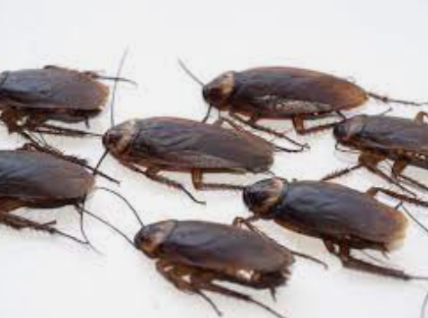
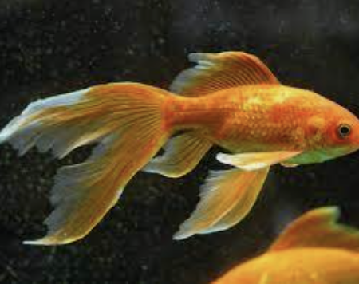
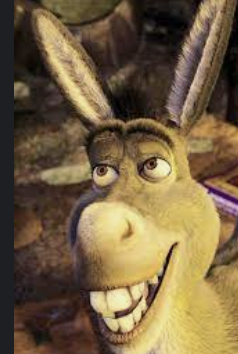

지구상에 약 3,500종이 알려져 있고, 한국에서는 9속 56종이 기록되어 있다. 다른 곤충과 같이 머리·가슴·배 3부분으로 되어 있다. 머리에는 1쌍의 더듬이, 1쌍의 겹눈, 1개의 아랫입술(대롱 모양의 주둥이), 1쌍의 아랫입술수염이 있다. 가슴은 앞가슴방패판·가슴방패판·작은방패판으로 나누어지고, 몸 전체가 많은 비늘로 덮여 있다.

전세계적으로 약 4,000종의 바퀴벌레가 있다. 몸은 예외없이 편평하고 납작하며 광택이 난다. 몸길이 약 1cm의 소형의 것에서부터 남아메리카에 사는 블라베루스(Blaberus)와 같이 대형의 것까지 다종다양하다. 몸빛깔은 다갈색 또는 흑갈색계인데, 그 중에는 연한 녹색 또는 금속성 녹색인 것도 있다. 머리가 작아서, 앞가슴등판 밑에 숨길 수 있다. 구기(口器:입틀)는 전형적인 저작형으로 큰턱이 발달했다. 눈은 완두 모양이고 홑눈은 2개이다. 촉각(더듬이)은 실 모양으로 길지만, 왕바퀴처럼 짧은 것도 있다. 머리와 이어진 앞가슴등판은 원반 모양으로 크고, 앞날개 표면처럼 광택이 있다. 배는 매우 납작하고 넓은데, 10마디로 이루어져 있으며 제1마디는 짧게 퇴화했고 배의 뒷마디에 가시가 있는 것도 있다. 배 끝부분에 있는 미각(尾角)은 굵고 마디가 있으며, 긴 방추형(紡錘形)이다. 앞날개는 약간 굳어 있으며, 가는 날개맥이 많은 그물 모양이다. 이 모양은 고생대 이래로 거의 변하지 않았다. 뒷날개는 부채꼴이며 넓적하다. 날개의 퇴화 정도는 여러 가지이며, 암컷만이 퇴화한 것, 암수 모두 퇴화해 작은 날개가 된 것, 또 거의 없어져 날개가 없는 것 등이 있다. 다리는 3쌍이 모두 걷는다리로 길게 잘 발달해 빠르게 움직이며, 넓적다리마디·정강이마디에는 날카로운 가시줄이 있다. 발목마디는 5마디이고, 그 배쪽에 있는 발목마디판은 벽면 등에 붙는 데 적합하며, 벽면을 자유롭게 걸어다니는 도구가 된다.
수컷의 생식하판은 사다리꼴 또는 반원형이며, 보통 1쌍의 꼬리돌기가 붙어 있다. 암컷의 생식하판은 더 작고 끝쪽으로 향하면서 가늘어지고 꼬리돌기는 없다. 수컷의 외부생식기는 비대칭형이며, 사마귀류와 매우 비슷하다. 암컷의 산란관도 사마귀류와 매우 비슷하고 퇴화했으며, 상하판(上下瓣)은 짧고 끝은 아래쪽으로 휘어 있다.

금붕어
((goldfish)
붕어와 형태가 비슷한 점, 염색체의 수가 같고 또 같은 형인 점, 그리고 순계분리(純系分離)하여 사육을 반복해 가다 보면 붕어가 생긴다 하여 붕어의 변종(變種)으로 되어 있다. 원산지는 양쯔강[揚子江] 하류의 저장성[浙江省] 항저우[杭州]이다. 본초학자 이자진(李自珍)은 금어(金魚) 또는 금적어(金鯽魚)라 하여 당대(唐代)에 야생의 금붕어가 있었음을 기록하고 있다. 북송시대(960∼1126)에는 몸빛깔이 황금색으로 변이한 금붕어에 관한 기록이 있으며 저장성 자싱[嘉與]의 남호와 서호가 발생지라 하였다.

당나귀
(donkey)
당나귀의 기원은 가축화된 것과 야생의 것 두 가지가 있는데, 야생의 것에는 아프리카 야생당나귀와 아시아 야생당나귀가 있다. 아프리카 야생당나귀는 아프리카 북동부에서 남부지방에 걸쳐 살고 있다. 몸의 크기는 큰 개 정도이며 좀더 큰 것도 있다. 힘은 세지만 성질은 소심하다. 아시아 야생당나귀는 시리아 ·아라비아·이란·티베트·몽골 등지에 살고 있다. 몸의 크기는 대체로 말과 당나귀의 중간 정도이다. 다윈은 아프리카 야생의 누비아당나귀(E.a.africanus)를 오늘날 당나귀의 선조로 취급하였는데, 켈러는 아시아 야생당나귀를 당나귀의 원종으로 취급하고 있다.